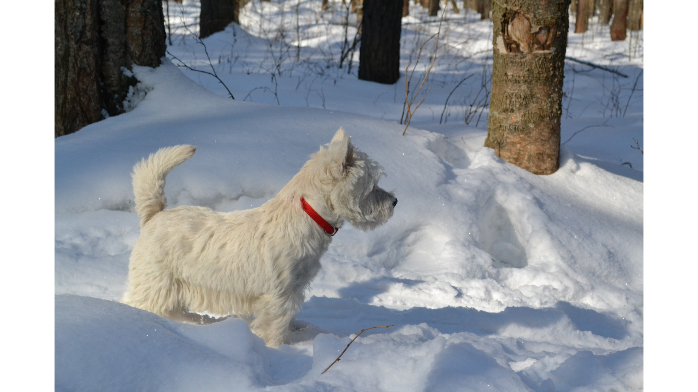

My Favorite Dog Breeds
Why I Love Dogs
Dogs are known as "man's best friend" for a good reason. They offer companionship, loyalty, and unconditional love. Below are three distinct breeds that capture my heart.
What Makes Them Special?
- Samoyeds are famous for their "Sammy smile" and fluffy white coats.
- Golden Retrievers are incredibly friendly, intelligent, and great family pets.
- West Highland White Terriers (Westies) are confident, spunky, and full of personality.
Photo Gallery
The Samoyed
The Golden Retriever

The West Highland White Terrier
Learn More
Want to learn more about these specific breeds? Visit the full breed list on the American Kennel Club (AKC) website.